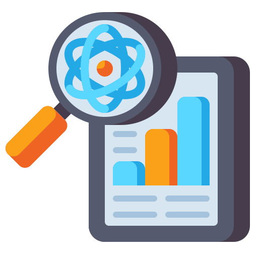

Work Experiences

Senior Blockchain Developer
January 2022 - Present
SecureChain Solutions Inc. Key Achievements:
• Orchestrated the development of a permissioned blockchain solution for a multinational financial institution, ensuring compliance with regulatory standards and achieving a 25% improvement in transaction speed.
• Led a team of blockchain developers in implementing zero-knowledge proof techniques, enhancing privacy and security for a healthcare client's decentralized health record system.
• Spearheaded the integration of blockchain into legacy systems through the use of interoperable protocols, resulting in seamless transition and increased operational efficiency.

Lead UI/UX Designer
January 2021 - November 2021
PixelCraft Studios Key Achievements:
• Conceptualized and executed the redesign of a high-traffic e-commerce platform, resulting in a 30% increase in user engagement and a 20% boost in conversion rates.
• Implemented a user feedback loop, conducting A/B testing and usability studies to inform design iterations, leading to a 15% reduction in bounce rates.
• Collaborated with cross-functional teams to implement a design system, ensuring brand consistency across multiple products and platforms.

Key Achievements:
• Developed and deployed a predictive maintenance model for a manufacturing client, resulting in reduction in unplanned downtime and a 25% decrease in maintenance costs.
• Established a real-time analytics dashboard for a retail partner, providing insights into customer behavior and inventory management, leading to a 20% increase in sales.
• Implemented advanced anomaly detection algorithms in cybersecurity applications, enhancing threat detection capabilities and reducing false positives by 30%.
Principal Data Scientist
January 2019 - October 2020
Insightful Analytics Solutions Key Achievements:
• Developed and deployed a predictive maintenance model for a manufacturing client, resulting in reduction in unplanned downtime and a 25% decrease in maintenance costs.
• Established a real-time analytics dashboard for a retail partner, providing insights into customer behavior and inventory management, leading to a 20% increase in sales.
• Implemented advanced anomaly detection algorithms in cybersecurity applications, enhancing threat detection capabilities and reducing false positives by 30%.